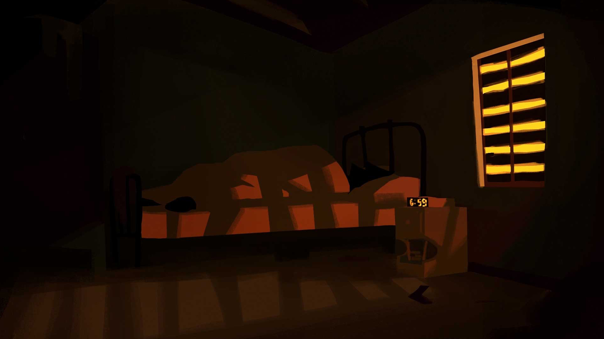
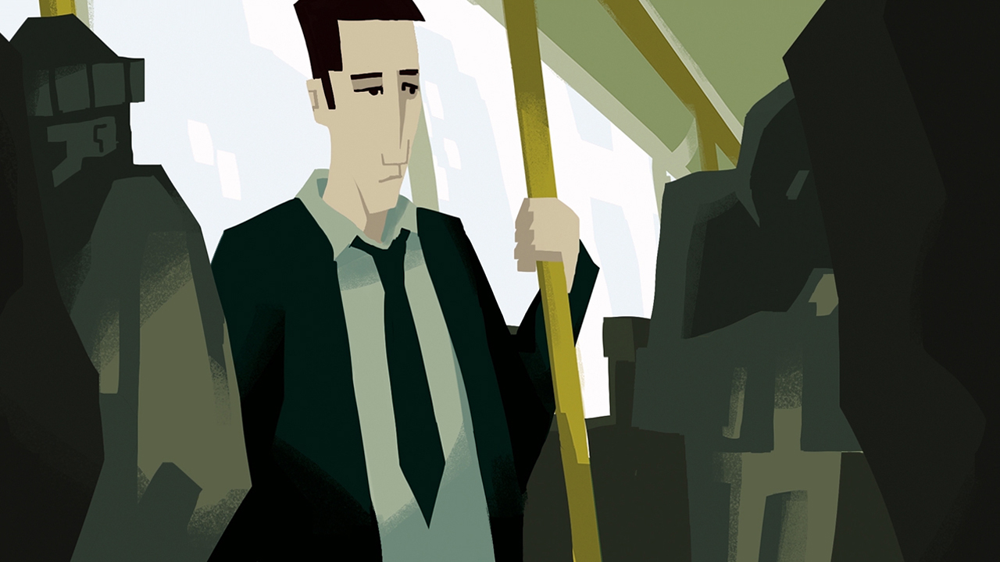
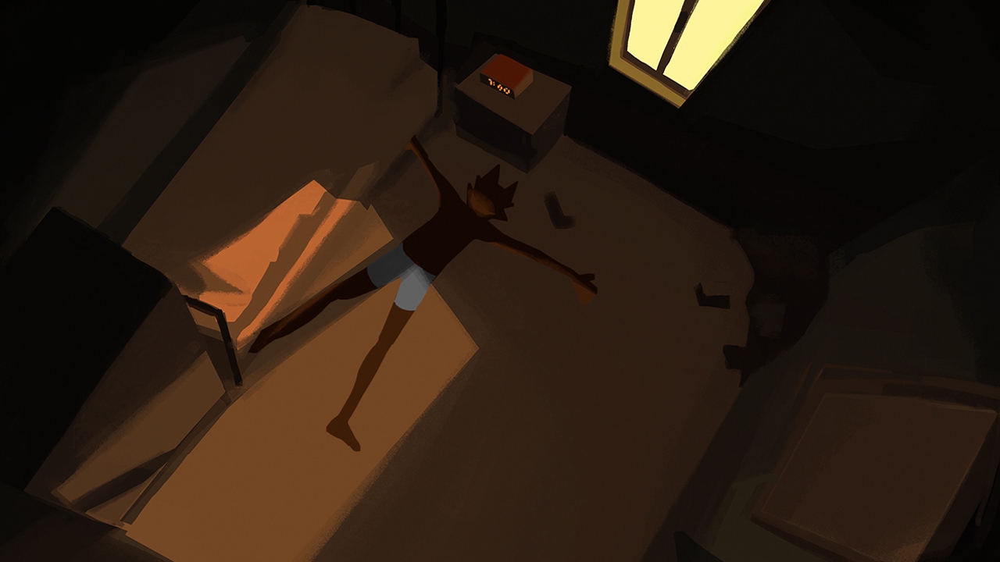
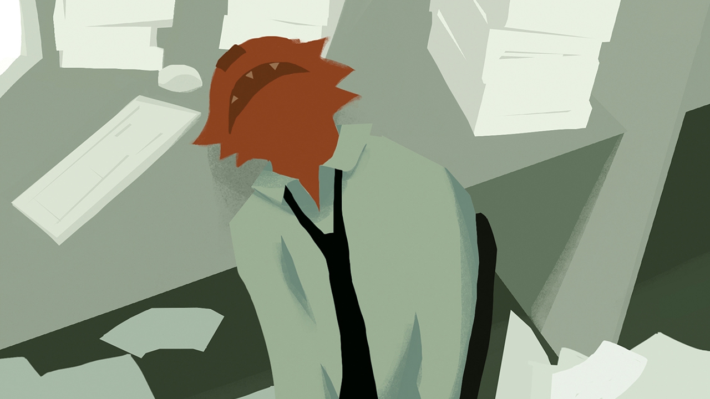
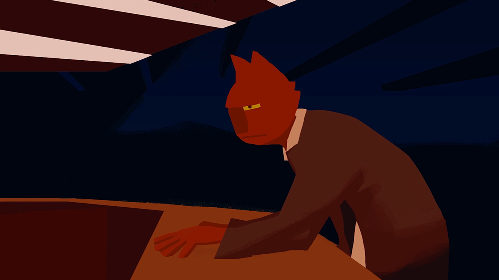
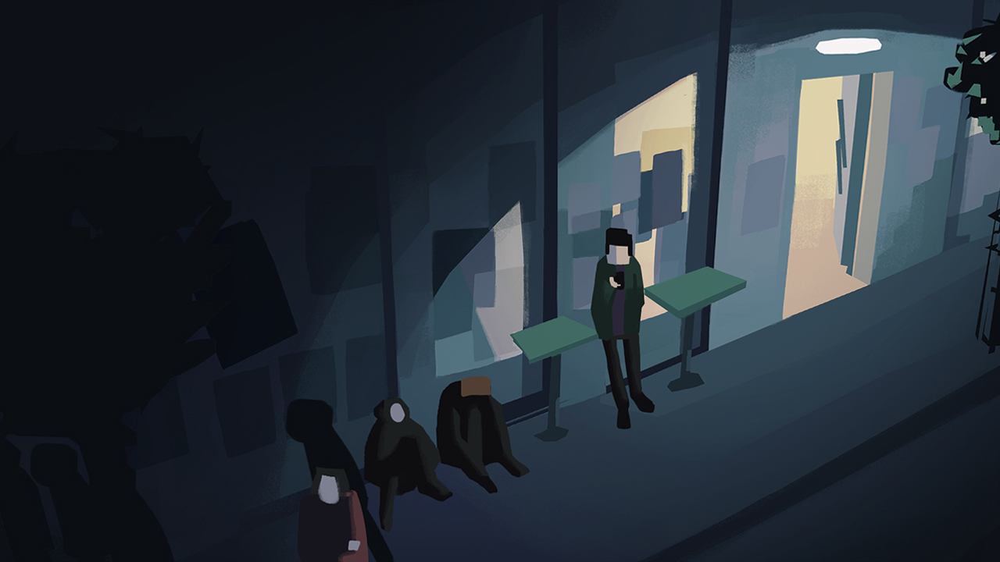
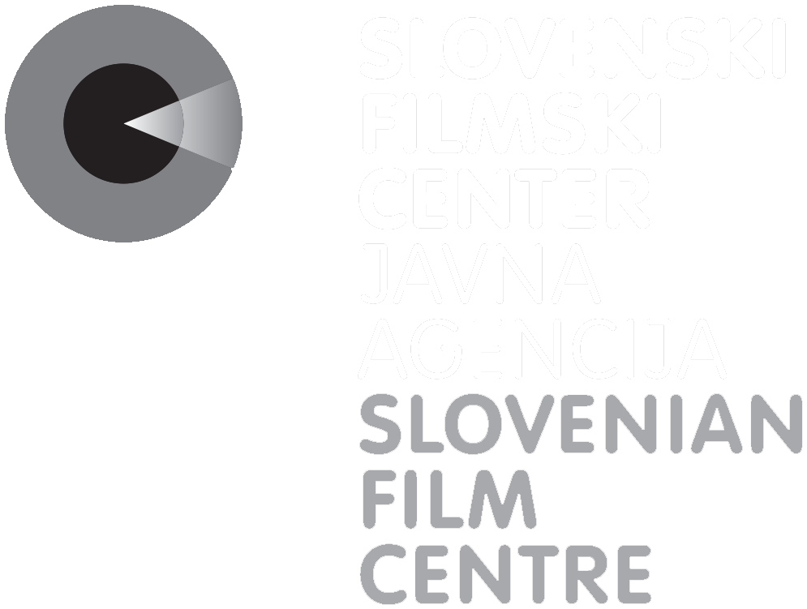
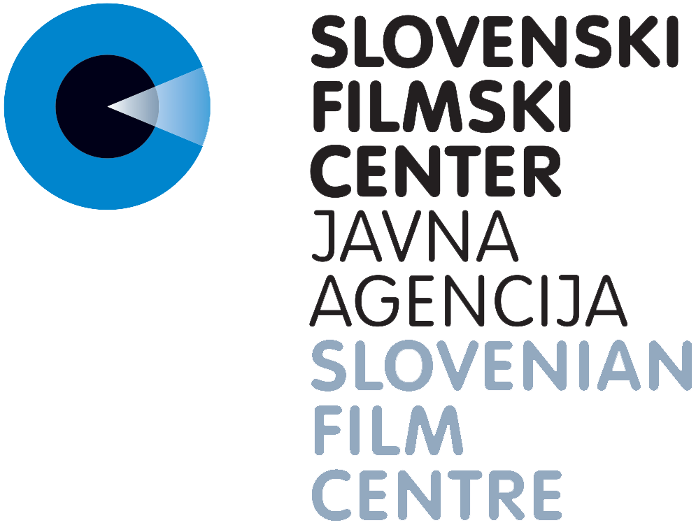

Started during a 2 week school workshop in 2nd year... finished 2 and a half months later. My first attempt at a narrative short film.
A grumpy monster, portraying itself to the world as a human, is trapped in an endless cycle. He works constantly and has no free time. After work, he goes to a club...
AWARDS AND SELECTIONS
- 2022 - Special jury mention - Festival FilmFreš
- 2022 - Special mention - Screener Short animation
- 2020 - Best student animated film - DSAF (Slovenian Animated Film Association)






SCREENINGS
- FilmFreš, Nova Gorica (SI) 2022
- 5th Chaniartoon, Chania (GR) 2021
- 33 Girona Film Festival, Girona (ES) 2021
- Ars Elektronica, Online (AT) 2021
- Animart Festival, Online (GR) 2021
- NAFF / Neum Animated Film Festival 16, Online (BiH) 2021
- Kino Otok, Izola (SI) 2021
- Animateka, Online (SI) 2020
- FSF Festival of Slovenian Film, Ljubljana (SI) 2020
- First Crossings, Nova Gorica (SI) 2020
FILM CREW
- Author, Story, Animation, Music and Sound Design: Miha Reja
- Production: University of Nova Gorica School of Arts
- Co-Production: Famul Video Lab
- With the support of: Slovenian Film Centre, Viba Film Ljubljana

